2.1 Insertion sort
정의 : 숫자 배열을 정렬하기 위한 효율적인 알고리즘
key : 정렬하기 원하는 숫자
입력 : n개의 일련의 숫자들 <a1, a2, ..., an>
출력 : 입력 순서를 a'1 ≤ a'2 ≤ ... ≤ a'n인 순서로 재분배한 <a'1, a'2, ..., a'n> 순열
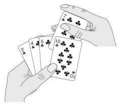
그림 2.1 Insertion sort를 사용해 카드를 정렬하는 모습
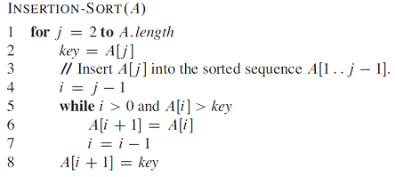
pseudo-code로 작성된 insertion sort
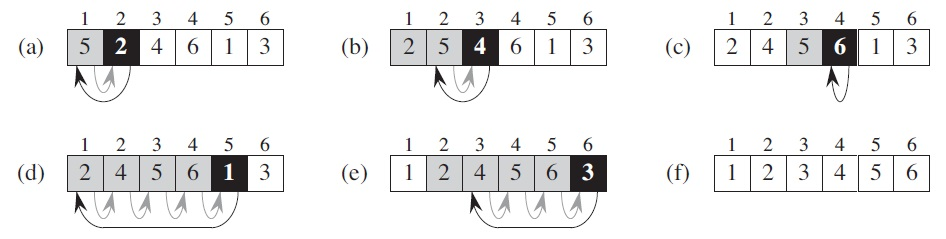
insertion sort를 그림으로 설명
Exercise
2.1-1
Using Figure 2.2 as a model, illustrate the operation of INSERTION-SORT on the array A = <31; 41; 59; 26; 41; 58>.
2.1-2
Rewrite the INSERTION-SORT procedure to sort into nonincreasing instead of nondecreasing order.
(답을 nonincreasing으로 안썼음. 잘못이해하고 끝에서부터 정렬하는거로 바꿔버림.ㅠㅠ)
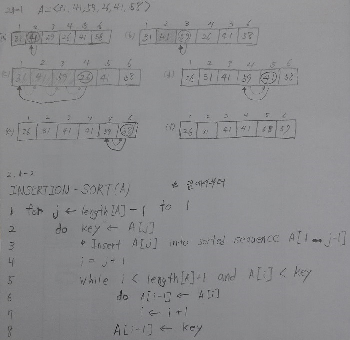
2.1-3
Consider the searching problem:
Input: A sequence of n numbers A = <a1, a2, ..., an> and a value.
Output: An index i such that v = A[i] or the special value NIL if v does not appear in A.
Write pseudocode for linear search, which scans through the sequence, looking for v. Using a loop invariant, prove that your algorithm is correct. Make sure thatyour loop invariant fulfills the three necessary properties.
Linear-Search(A)
for j = 1 to A.length
if v == A[j]
return i
return NIL
1 2 3 4 5 6 7 8 9 10 11 12 13 14 15 16 17 18 19 20 21 | public class LinearSearch { public static void main(String[] args) { int[] A = {5, 81, 17, 99, 7, 31, 27, 22, 10, 88}; System.out.println(lsGet(32, A)); } public static String lsGet(int v, int[] A) { for (int i = 0; i < A.length; i++) { if (v == A[i]) { return "" + i; } } return "NIL"; } } |
2.1-4
Consider the problem of adding two n-bit binary integers, stored in two n-element arrays A and B. The sum of the two integers should be stored in binary form in an (n + 1)-element array C. State the problem formally and write pseudocode for adding the two integers.
adding the two integers(A,B)
carry = 0
for i = A.length to 1
sum = (A[i]+B[i]+carry) % 2
carry = (A[i]+B[i]+carry) / 2
C[i+1] = sum
C[1] = carry
2.2 Analyzing algorithms
알고리즘 분석은 알고리즘이 필요로 하는 자원을 예상하는 것이다. 메모리, 통신 대역폭, 컴퓨터 하드웨어 같은 자원이 우선시되지만, 우리가 측정하려는 것은 연산 시간이다. 여기서는 RAM(Random Access Machine)이라는 일반적인 하나의 처리기를 사용한다고 가정한다.
RAM 특징
- 동시 실행하지 않고, 명령어 한 개를 수행하고 바로 그 다음 명령어 수행
- 산술(덧셈,뺄셈,곱셈,나눗셈,나머지,올림,버림), 자료이동(적재, 저장, 복사), 제어(조건/비조건 분기, 서브루틴 호출/복귀)
- Data type : integer, float point(부동소수점)
- 데이터의 각 워드 크기를 제한(이유 : 데이터가 무한정일 경우를 제외하기 위해서)
Analysis of insertion sort
삽입 정렬의 연산 시간은 입력(크기, 정렬정도)에 영향을 받는다
실행 시간, 입력 크기가 중요하다.
: i번 줄에서 걸리는 시간(정수)
: 수행횟수
: 중첩된 반복문의 수행횟수
- best case : 순서대로 정렬된 배열 (1,2,...,n)을 정렬할 경우. 형태는 1차함수(linear function)
- worst case : 역순으로 정렬된 배열 (n,n-1,...,1)을 정렬. 형태는 2차함수(quadratic function)
Worst-case and average-case analysis
best-case 보다는 worst-case에 집중 -> worst-case는 실제로 자주 발생한다. 그리고 더 최악인 상황에 직면하지 않는다.
Average-case
- 정의 : 가능한 모든 입력에 대한 알고리즘 복잡도의 평균값
- worst-case와 마찬가지로 2차함수
- 실제로 적용하기에는 명백하지 않다. 따라서, 확률분석과 실행시간 예측을 가능하게 하는 랜덤 알고리즘을 사용한다.
Order of growth
- 실행시간 증가율or증가순서라는 추상적 개념을 사용
- 최고차항만 고려(입력 크기가 클 경우, 나머지 차항은 중요하지 않음)
발음법 : theta of n-squared
- 상수 요소와 낮은 차항 때문에 실행시간 증가율이 높은 알고리즘은 입력 크기가 적을 경우 실행시간이 적게 걸릴 수 있다.
The “average case” is often roughly as bad as the worst case. Suppose that we randomly choose n numbers and apply insertion sort. How long does it take to determine where in subarray A[1 .. j-1] to insert element A[j] On average, half the elements in A[1 .. j-1] are less than A[j] , and half the elements are greater. On average, therefore, we check half of the subarray A[1 .. j-1], and so is about j/2. The resulting average-case running time turns out to be a quadratic function of the input size, just like the worst-case running time.
Exercise
2.2-1
Express the function  in terms of ‚
in terms of ‚ -notation.
-notation.
2.2-2
Consider sorting n numbers stored in array A by first finding the smallest element of A and exchanging it with the element in A[1]. Then find the second smallest element of A, and exchange it with A[2]. Continue in this manner for the first n-1 elements of A. Write pseudocode for this algorithm, which is known as selection sort. What loop invariant does this algorithm maintain? Why does it need to run for only the first n-1 elements, rather than for all n elements? Give the best-case and worst-case running times of selection sort in ‚-notation.
best-case :
worst-case :
| times | |||||||
| SELECTION-SORT(A): | |||||||
| for i = 1 to A.length - 1 | n | ||||||
| min = i | n-1 | ||||||
| for j = i + 1 to A.length | |||||||
| if A[j] < A[min] | |||||||
| min = j | |||||||
| temp = A[i] | n-1 | ||||||
| A[i] = A[min] | n-1 | ||||||
| A[min] = temp | n-1 | ||||||
// 선택 정렬은 모든 원소를 다 검색해야 하므로 best-case, worst-case에 상관이 없이 똑같다.
내답
SELECTION-SORT(A)
for i = 1 to A.length -1
min = A[j]
for j = i+1 to A.length
if A[j] < min
min = A[j]
A[j] = A[i]
A[i] = min
정답
SELECTION-SORT(A):
for i = 1 to A.length - 1
min = i
for j = i + 1 to A.length
if A[j] < A[min]
min = j
temp = A[i]
A[i] = A[min]
A[min] = temp
// 내답은 최소값이 발견될 때마다, 해당 배열요소끼리 교환시키므로 전체적인 실행시간이 늘어난다. 반면, 정답은 최소값에 해당하는 인덱스 값을 찾고 나서 교환하므로 실행시간이 적게 걸린다.
2.2-3
Consider linear search again (see Exercise 2.1-3). How many elements of the input sequence need to be checked on the average, assuming that the element being searched for is equally likely to be any element in the array? How about in the
worst case? What are the average-case and worst-case running times of linear search in ‚-notation? Justify your answers.
average-case, worst-case 모두
2.2-4
How can we modify almost any algorithm to have a good best-case running time?
Modify the algorithm so it tests whether the input satisfies some special-case condition and, if it does, output a pre-computed answer. The best-case running time is generally not a good measure of an algorithm.
2.3 Designing algorithms
넓은 범위의 알고리즘 디자인 기술이 선택될 수 있다. 그 예로, 삽입 정렬에서는 증가 접근법을 사용했다.
이 장에서는 '분할하고 정복하기'라고 알려진 대안적 디자인 접근법에 대해 알아본다.
2.3.1 The divide-and-conquer approach
정의
한 문제를 더 작은 여러 개의 부분 문제로 분할한다. 부분 문제는 원래 문제와 유사하지만 크기는 더 작다.
방식
- Divide 동일한 문제의 더 작은 경우들인 많은 하위문제로 문제를 분할한다.
- Conquer 재귀적으로 하위 문제를 해결해서 정복한다. 만약 하위 문제의 크기가 충분히 작다면, 곧장 나아가는 방법(a straightforward manner)으로 하위 문제를 풀어라.
- Combine 원래 문제를 위한 해결책을 만들기 위해 하위 문제의 해결책들을 조합하라.
divide-and-conquer를 적용한 병합정렬 알고리즘
- Divide : n/2 요소를 가진 정렬된 부분수열 2개를 만들기 위해 n개 요소를 가진 수열을 분할하라.
- Conquer : 병합 정렬을 사용해 부분수열 2개를 정렬하라.
- Combine : 정렬된 답을 만들기 위해서 정렬된 부분수열 2개를 병합하라.
MERGE(A,p,q,r)
- 배열 A, 인덱스 p,q,r (크기 : p ≤ q＜r)
- A[p..q], A[q+1..r]인 색인을 가지며, 둘 다 정렬된 배열이다. 병합정렬 결과는 A[p..r]이다.
- 병합된 요소들의 합 : n = r-p+1
- sentinel : ∞로 표시하며, 각 배열의 마지막에 위치해 있다. 해당 배열의 요소가 전부 복사되었음을 의미한다.
다른 배열의 sentinel이 나타나기 전까지 sentinel은 비교될 때마다 항상 큰 값으로 치부된다.
그래야만 다른 배열의 요소가 A 배열로 전부 들어갈 수 있기 때문이다. - 병합절차 시간복잡도(MERGE함수) :

Pseudo-code of merge sort
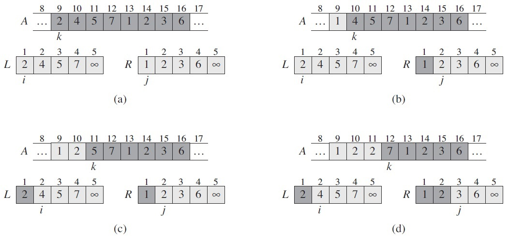
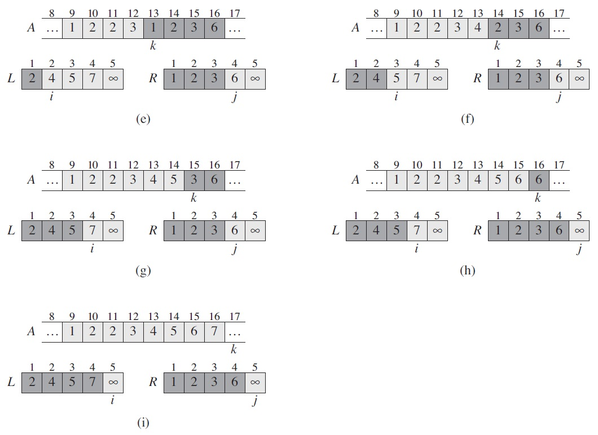
그림 2.3 병합정렬의 조합 과정의 예
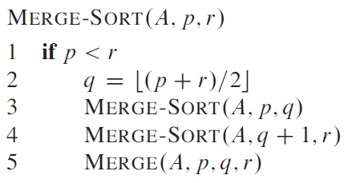
병합정렬을 위해 재귀 방식을 이용한 A배열 분할 과정
(요소가 1이 될 때까지 분할한다)
(요소가 1이 될 때까지 분할한다)
참고: x보다 크거나 같은 값 중 제일 작은 값
: x보다 작거나 같은 값 중 제일 큰 값
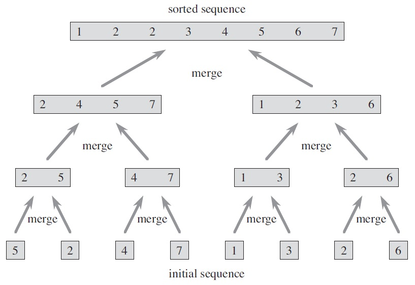
그림 2.4 A배열 <5,2,4,7,1,3,2,6>의 병합정렬 연산
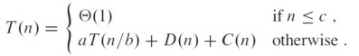
기호 설명 - n 원래 문제 크기, a 부분문제개수, b 원래 문제 크기에서 나눠진 크기, D(n) 분할시간, C(n) 조합시간
- if n ≤ c : n이 상수보다 같거나 작으면 한 번 수행하므로 Θ(1).
- otherwise : aT(n/b) + D(n) + C(n). a개의 T(n/b)가 있으므로, 분할/조합 시간을 고려하면 이 식이 나옴.
Analysis of merge sort
n > 1 요소를 가질 때, 다음 과정을 이용해 실행시간을 분석한다.
Divide: 분할 단계에서는 상수 시간을 취하는 부분수열의 중간만 계산한다. 그러므로 D(n) = Θ(1).
Conquer: 2T(n/2)만큼 실행시간이 추가되며, 각각의 크기가 n/2인 부분문제 2개를 재귀적으로 풀어낸다.
Combine: n요소로 된 부분수열에서의 병합 절차가 Θ(n) 시간만큼 걸린다. 그래서 C(n) = Θ(n).
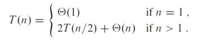
T(n) : 입력 크기 n인 문제의 총 실행시간
(2.1)
병합 정렬의 경우, a와 b의 값이 같다. 따라서, 2T(n/2)
D(n) + C(n) = Θ(1) + Θ(n) = Θ(n)
Chapter 4에서 master theorem을 이용해 T(n) = Θ(n lgn) 인 것을 보여줄 수 있지만, 이 단계에서는 필요 없다.
따라서, (2.1)을 다시 쓰면 (2.2)와 같다.
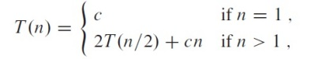
(2.2)
상수 c는 크기 1인 문제를 푸는데 필요한 시간뿐만 아니라, divide와 combine 단계의 배열 요소당 시간을 나타낸다.
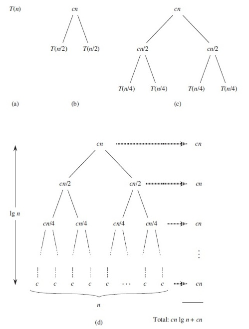
그림 2.5  인 재귀식에 대한 재귀 트리 구성법
인 재귀식에 대한 재귀 트리 구성법
※ 편의상, n은 2의 거듭제곱이라고 가정한다.
root -> level 0
i -> level i
n -> input size n
a total number of levels :  =
=  =
= 
a number of next nodes :  =
= 
a number of leaves : 
Exercise
2.3-1
Using Figure 2.4 as a model, illustrate the operation of merge sort on the array
A = <3, 41, 52, 26, 38, 57, 9, 49>.
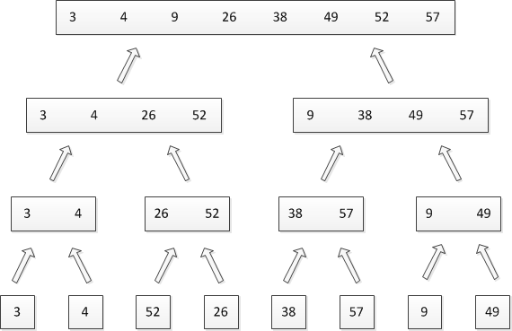
2.3-2
Rewrite the MERGE procedure so that it does not use sentinels, instead stopping once either array L or R has had all its elements copied back to A and then copying the remainder of the other array back into A.
(번역 : 센티넬을 사용하지 않고, 배열 L 또는 R이 자신의 요소를 A에 모두 복사했을 때 다른 배열의 나머지를 A에 복사하는 방식으로 병합 정렬을 재작성하라.)
MERGE(A,p,q,r)
n1 = q−p+1
n2 = r−q
let L[1..n1] and R[1..n2] be new arrays
for i=1 to n1
L[i] = A[p+i−1]
for j=1 to n2
R[j] = A[q+j]
i=1
j=1
for k=p to r
if L[i] ≤ R[j]
A[k] = L[i]
i = i+1
if (n1 == i−1)
while (k<r)
k = k+1
A[k] = R[j]
j = j+1
else
A[k] = R[j]
j = j+1
if (n2 == j−1)
while (k<r)
k = k+1
A[k] = L[i]
i = i+1
2.3-3
Use mathematical induction to show that when n is an exact power of 2, the solution of the recurrence
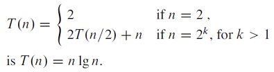
2.3-4
We can express insertion sort as a recursive procedure as follows. In order to sort A[1 .. n], we recursively sort A[1 .. n-1] and then insert A[n] into the sorted array A[1 .. n-1]. Write a recurrence for the running time of this recursive version of
insertion sort.
INSERTION-SORT(A,n)
if n > 1
j = n-1
INSERTION-SORT(A,j)
INSERTION(A,j,n)
INSERTION(A,j,n)
key = A[n]
while j > 0 and A[j] > key
A[j+1] = A[j]
j = j - 1
A[j+1] = key
2.3-5
Referring back to the searching problem (see Exercise 2.1-3), observe that if the sequence A is sorted, we can check the midpoint of the sequence against and eliminate half of the sequence from further consideration. The binary search algorithm repeats this procedure, halving the size of the remaining portion of the sequence each time. Write pseudocode, either iterative or recursive, for binary search. Argue that the worst-case running time of binary search is Θ(lg n).
반복문
BINARY-SEARCH(A,v)
l = 1
r = A.length
while l <= r
m = (l+r) / 2
if v == A[m]
return m
else if v < A[m]
r = m-1
else
l = m+1
return NILBINARY-SEARCH(A,v)
l = 1
r = A.length
return BINARY(A,v,l,r)
BINARY(A,v,l,r)
if l > r
return NIL
m = (l+r) / 2
if v == A[m]
return m
else if v < A[m]
return BINARY(A,v,l,m-1)
else
return BINARY(A,v.m+1,r)
return BINARY(A,v,l,r)
worst-case running time
T(n) = T(n/2) + c = lg n = Θ(lg n)
증명
k 반복횟수, n 전체크기
반복할 때마다 전체 크기가 1/2씩 감소하므로 식은 다음과 같다.
2.3-6
Observe that the while loop of lines 5–7 of the INSERTION-SORT procedure in Section 2.1 uses a linear search to scan (backward) through the sorted subarray A[1..j-1]. Can we use a binary search (see Exercise 2.3-5) instead to improve the overall worst-case running time of insertion sort to Θ(n lg n)?

삽입정렬의 worst-case 실행시간을 향상시킬 수 없다. 탐색 시간이 n lg n에 걸리더라도, 삽입 정렬은 오른쪽으로 나아가면서 모든 요소를 정렬해야한다. 비교 횟수가 줄더라도 교환 횟수는 같기 때문이다. (key를 삽입할 위치를 찾은 후, 그 위치로 key를 삽입한다. 그런 후에 해당 위치 오른쪽에 있는 정렬된 요소들은 [key 삽입 위치 +1]부터 시작하여 1칸씩 오른쪽으로 이동해야 한다. 결국 이진 탐색은 교환 횟수가 순차 탐색과 같다.)
Describe a Θ(n lg n)-time algorithm that, given a set S of n integers and another integer x, determines whether or not there exist two elements in S whose sum is exactly x.
PAIR-EXISTS(S, x):
A = MERGE-SORT(S)
for i = 1 to S.length
if BINARY-SEARCH(A, x - S[i]) != NIL
return true
return false//병합정렬은 Θ(n lg n) 걸리고, for문은 Θ(n) 걸린다. 따라서 전체 실행 시간은 Θ(n lg n)이다.
Problems
2-1 Insertion sort on small arrays in merge sort
Although merge sort runs in Θ(n lg n) worst-case time and insertion sort runs in Θ(n²) worst-case time, the constant factors in insertion sort can make it faster in practice for small problem sizes on many machines. Thus, it makes sense to
coarsen the leaves of the recursion by using insertion sort within merge sort when subproblems become sufficiently small. Consider a modification to merge sort in which n/k sublists of length k are sorted using insertion sort and then merged
using the standard merging mechanism, where k is a value to be determined.
a. Show that insertion sort can sort the n/k sublists, each of length k, in Θ(nk) worst-case time.
삽입 정렬의 시간복잡도는 Θ(n²) 이다. 길이가 k인 부분 리스트의 시간복잡도는 Θ(k²) 이고, 부분 리스트들의 총 개수는 n/k이다. 따라서, Θ(k² * n/k) = Θ(nk) 이다.
b. Show how to merge the sublists in Θ(n*lg(n/k)) worst-case time.
레벨/부분리스트/전체수열 크기를 알고 싶을 때 사용하는 공식은이다. n은 전체 크기, p는 레벨, k는 부분리스트 길이이다. (예 : p=1일 때, n=8이라면 k=4이다.) 이 식을 레벨에 대한 식으로 바꾸면 p = lg(n/k) 이 된다.
병합하려는 전체 크기가 n이고 레벨은 lg(n/k)이므로, Θ(n*lg(n/k)) 이다.
c. Given that the modified algorithm runs in Θ(nk + n*lg(n/k)) worst-case time, what is the largest value of k as a function of n for which the modified algorithm has the same running time as standard merge sort, in terms of Θ-notation?
※ k = lg n 이라고 가정//k = lg n 이라고 가정해야지만 문제를 풀 수 있다고 나온다. 흐음... 애초에 풀 수가 없는 문제였네.
따라서, Θ-표기법으로 표시하면 Θ(nlgn)이다.
d. How should we choose k in practice?
In practice, k should be the largest list length on which insertion sort is faster than merge sort.
2-2 Correctness of bubblesort
Bubblesort is a popular, but inefficient, sorting algorithm. It works by repeatedly swapping adjacent elements that are out of order.
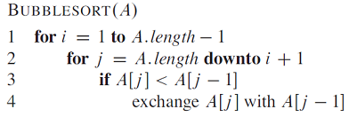
a. Let A' denote the output of BUBBLESORT(A). To prove that BUBBLESORT is correct, we need to prove that it terminates and that
A'[1] ≤ A'[2] ≤ … ≤ A'[n](2.3)
where n = A.length. In order to show that BUBBLESORT actually sorts, what else do we need to prove?
A 요소들이 순서대로 정열된 A'을 보여주면 된다.
The next two parts will prove inequality (2.3).
b. State precisely a loop invariant for the for loop in lines 2–4, and prove that this loop invariant holds. Your proof should use the structure of the loop invariant proof presented in this chapter.
Loop invariant :
2-4줄 for loop에서 매번 반복을 시작할 때마다 A[j]는 최소값을 가진다. A[j..n]은 loop가 시작될 때 A[j..n]에 들어 있던 값들의 치환이다.
Initialization :
초기에 j=n이고 A[j..n]은 A[n] 1개만 가진다.
Maintenance :
매번 반복시, A[j]는 최소값을 가진다. 3-4줄에서 A[j]가 A[j-1]보다 작으면 서로 교환한다. 그래서 A[j-1]은 A[j-1..n]에서 계속 최소값이다. j는 다음 반복 때마다 1씩 감소한다.
Termination :
j==i 이면 loop를 끝낸다. loop invariant에 기술한대로, A[i]는 최소값이고 A[i..n]은 loop가 시작될 때 A[i..n]에 있는 값들의 치환이다.치환 : 기존 순서를 다른 순서로 변경
c. Using the termination condition of the loop invariant proved in part (b), state a loop invariant for the for loop in lines 1–4 that will allow you to prove inequality (2.3). Your proof should use the structure of the loop invariant proof presented in this chapter.
Loop invariant :
1-4줄로 구성된 for문의 시작에서, 부분배열 A[1..i-1]은 최초 A[i..n] 배열에서 정렬된 순서로 i-1개의 최소값으로 구성되어있다. 그리고 A[i..n]은 최초 A[1..n]의 n-i+1개의 값으로 구성되어있다.
Initialization:
첫 번째 반복 전에 i=1이다. 부분배열 A[1..i-1]은 의미가 없고, loop invariant는 비어있는 상태를 유지한다.
Maintenance:
A[1..i-1]은 A[1..n]에 있는 i개의 최소값들로 구성되며, 정렬된 상태이다. 2-4줄 for loop를 수행한 후에, A[i] 는 A[i..n]의 최소값이고 A[1..i]는 현재 정렬된 순서로 최초 A[i..n]에서 i개의 최소값들이다. (b)에서 이러한 동작을 보여주었다.
게다가 2-4줄 for loop는 A[i..n]의 순서를 바꾸기 때문에, 부분배열 A[i+1..n]은 최초 A[1..n]에 남아있던 n-i개로 구성되어있다.
Termination:
i = n+1일 때, 1-4줄 for loop는 종료된다. 따라서 i-1 = n 이다. loop invariant에 기술한대로, A[1..i-1]은 전체배열 A[1..n] 이다. 최초 배열 A[1..n]을 정렬한 상태로 구성되어있다.
d. What is the worst-case running time of bubblesort? How does it compare to the running time of insertion sort?
안 쪽 for문이 걸리는 시간을 계산하면 된다.
따라서, worst-case running time은 Θ(n²)이다. 삽입정렬의 실행시간과 같다.
The following code fragment implements Horner’s rule for evaluating a polynomial
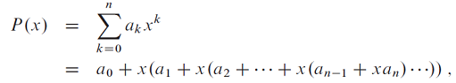
given the coefficients a0, a1, ... , an and a value for x:
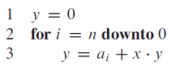
a. In terms of Θ-notation, what is the running time of this code fragment for Horner’s rule?
Θ(n)
b. Write pseudocode to implement the naive polynomial-evaluation algorithm that computes each term of the polynomial from scratch. What is the running time of this algorithm? How does it compare to Horner's rule?
y = 0
for i = 0 to n
m = 1
for k = 1 to n
m = m·x
y = y + aᵢ·m
실행시간은 Θ(n²) 이고, Horner's rule 보다 느리다.
c. Consider the following loop invariant:At the start of each iteration of the for loop of lines 2–3,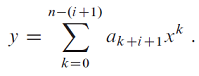
Interpret a summation with no terms as equaling 0. Following the structure of the loop invariant proof presented in this chapter, use this loop invariant to show that, at termination, 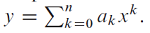
Initialization : 첫 번째 반복의 시작에서 i=n 이다. 대입해보면 시그마 윗 식이 n-(n+1) = -1 이라 식이 성립하지 않는다. 그래서 y=0이라 한 것 같다.
Maintenance : i번째 반복의 마지막 때마다 다음 식을 가진다.

Termination : loop 마지막에서 i = -1 이다.

// Termination에서 i=-1이 이해가 안된다. 반복문을 빠져나가기 전까지 식을 구하고 빠져나가나 보다.
d. Conclude by arguing that the given code fragment correctly evaluates a polynomial (c)에서의 증명으로 알고리즘이 올바르게 다항식의 수치값을 구한다는 사실을 알 수 있다.
2-4 InversionsLet A[1..n] be an array of n distinct numbers. If i < j and A[i]>A[j] , then thepair (i, j) is called an inversion of A.
a. List the five inversions of the array <2,3,8,6,1>.※주의 사항 : 배열 숫자가 아닌 인덱스 숫자로 써야 한다
(1,5),(2,4),(3,4),(3,5),(4,5)
b. What array with elements from the set {1,2, ... ,n} has the most inversions?How many does it have?
집합 {n,n-1, ... ,1} 일 때, 가장 많은 inversion(상반(相反))을 갖는다.
이 집합에서 개수가 n개일 때 inversion은 n-1개이다. 따라서, inversion의 총합은 다음과 같다.
(n-1) + (n-2) + ... + 1 = n(n-1)/2
c. What is the relationship between the running time of insertion sort and the number of inversions in the input array? Justify your answer.
삽입정렬에서 삽입 횟수는 inversion의 수와 같다.
d. Give an algorithm that determines the number of inversions in any permutation on n elements in Θ(n lg n) worst-case time. (Hint: Modify merge sort.)
MERGE-SORT(A,p,r)
if p < r
q = (p+r)/2
inversion = 0
inversion = inversion + MERGE-SORT(A,p,q)
inversion = inversion + MERGE-SORT(A,q+1,r)
inversion = inversion + MERGE-INVERSION(A,p,q,r)
return inversion
else
return 0
MERGE(A,p,q,r)
n₁ = q - p + 1
n₂ = r - q
for i=1 to n₁
L[i] = A[p+i-1]
for j=1 to n₂
R[j] = A[q+j]
L[n₁+1] = ∞
R[n₂+1] = ∞
i=1
j=1
inversions = 0
for k=p to r
if L[i] <= R[j]
A[k] = L[i]
i = i+1
else if L[i] > R[j]
A[k] = R[j]
j = j+1
inversion = inversion + n₁ - i + 1
return inversions
//설명 : i번째 다음 수들도 i보다는 크기 때문에 inversion이다. 따라서, 같이 inversion 개수를 세준다. 이런 방식을 쓰는 이유는 이렇다. j+1로 넘어감으로써 i번째 다음 수들에 대해서 j번째 inversion을 셀 수가 없기 때문이다.
//참고 : 센티넬을 만나면 다른 배열의 나머지 요소들이 A배열로 간다고 가정한 상태이다. 따라서 의사코드에 구현되어 있지 않다.
2장을 마치며...
이론을 공부하는 것이 오히려 쉬웠다. exercise랑 problem 문제가 어려우면서 이해가 안 가는 것이 많아 시간을 꽤 소비했다. '내 머리가 안좋은 것인가' 반문하게 되는 때가 많았다. 좀 더 노력해야겠다.